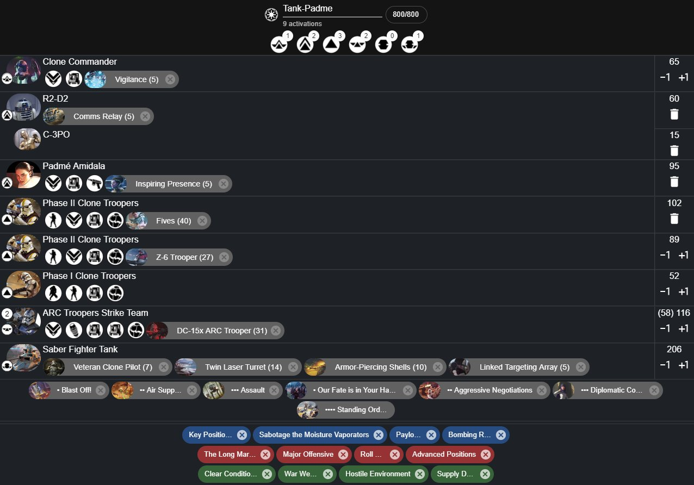
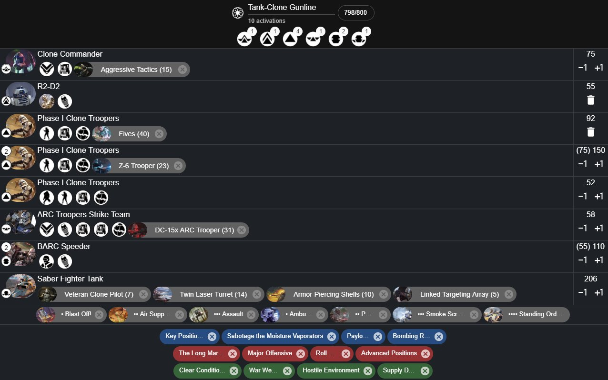

Star Wars Legion Strategies and Guides
Star Wars Legion has many units and strategies to implement. This page is designed to help players come up with new ideas to help them better field the armies they play on the table-top. You will be able to see articles written here by legion players expressing their love for certain units, factions and strategies.
Saber Tank Guide by Sawyer Dalmer
The TX-130 Saber-class Fighter Tank in Star War: Legion is a Heavy-type unit like none seen before. It has unique attributes and keywords that truly make it an unstoppable force to be reckoned with, some of which I will list below, and detail their implications: ● Red Dice Saves: as opposed to previous heavy units that statistically save only 17% or 33% of the time, the Saber tank saves at least 50% of the time and up to 67% of the time with surge tokens it has access to ● Outmaneuver: The saber tank is one of very few heavy units that can spend dodge tokens to cancel the critical hits that get past it’s armor ● Access to Exemplar: Padmé generates a lot of tokens and through her exemplar ability she can share her tokens to other units including aim, dodge, and surge tokens. Suddenly, the saber tank is able to guarantee more of it’s dice land, more damage gets through from its shots, and damage against it is mitigated. ● Access to Authoritative: When Padmé issues orders, she can issue her own order to any other unit, including the tank. So if you equip the Saber Tank with Linked Targeting Array, it will automatically have an aim token most every round. Below I will share a few lists that utilize the Saber Tank in different ways.

This list prioritizes getting an order onto the Saber tank while still allowing units like Padmé and R2 to play very dynamic cards. Padmé, C-3PO, and the clones can all stack tokens and the saber can make defense rolls with access to 3+ dodges, attacks with the same amount of aims, innumerable surges, and even the dreaded bogeyman of tokens: the standby token. R2 can still threaten secret mission, Padmé and the support clones can still be great token-batteries, all dedicated to keeping the tank alive and making sure it hits hard with it’s attacks.

This list is more of a traditional gunline, it provides beefier clones with heavies than the first list, but also sacrifices Padmé’s exemplar perks. As a result you get an additional activation without sacrificing too much in firepower, but the tank overall is more susceptible to damage and poor attack rolls. All-in-all, the tank is incredibly versatile. In light of today’s melee meta, some strike teams and heavies can be changed out to wookiees for additional melee support. The one shortfall of the tank is the faction it’s in. The tank needs support pieces to make it viable in a faction that - while running one heavy unit - can barely get to 9 useful activations. In the future however, we hope to see more diversity in Saber Tank lists.
A Case for Chad by Darin Erickson
Who needs no introduction.
Cad Bane, otherwise known as Chad Bane, is a spectacle for the seperatist army. With his many abilities and the extra victory point opportunity, he brings to the table a subtler approach of how to win a game of legion. First, let’s take a look at his unit card!!
Right off the get go, we see he has action: jump 1, allowing him in the developers words, to keep up with his prey i.e. jedi. Bounty is the key component to Chad, allowing him to score an extra victory point if he kills the target of his choosing, between commanders and operatives. Danger Sense 2 is a good sudo impervious if you have suppression on him, but unreliable with his white defense dice. Sharpshooter 1 and steady are his go to attack amplifiers allowing him to deny light cover and shoot after moving for FREE.
Next his bread and butter, the Command cards.
His one pip is a staple to grab if you take him, allowing him to either soften up a target or kill them for the bounty by shooting twice with pierce 1. The Uncanny Luck 2 for the turn just ups his survivability for a bit but it’s surging white die, so not great.
His 2 pip is very much a control piece, allowing you to lock down key pieces of the enemy team while also keeping Cad Bane on the move.
Rules were made to be broken, and in this case, remade again. Cad Bane is impossible to lock down at the beginning of a match because of these Bane Tokens, allowing him to play mind games with your opponent on where he is or where his bomb is. Three tokens, 2 of which are pain if divulged. Other than that, the Chad can do shenanigans with the “Here I am” token allowing him to whisk out to kill or game an objective and then teleport to safety the next round or used as a bomb if you don’t divulge it. The author has won games off of making an opponent confused as to which token is where. Cad Bane doesn’t need much else so his slots go rather empty.
In conclusion, There is always a Case for Chad Bane. Getting an extra victory point on low scoring games can be decisive. He is also a great deterrent to board areas with his tokens and the threat of bounty.